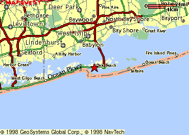

Nick's phone # is 516-587-6995.
Take the Long Island Rail Road to the Babylon Station. Tell
us in advance, From Eastern L.I. (Suffolk County): From North Shore: From South Shore: From Western L.I. (NYC or Nassau): Go East on Grand Central Pkwy (which turns into Northern State),
Northern State, or Southern State Pkwy to Meadowbrook Parkway
South (or Wantagh Pkwy South of you are starting in Nassau). Take
Meadowbrook or Wantagh all the way until the rotary around the
"Pencil" at Jones Beach. Don't pay any fees for entrance to Jones
Beach - pass the booths on the left. Once on the rotary, take
the eastmost exit (straight around from the Meadowbrook, 3/4 circle
from Wantagh) for Ocean Parkway East. Go about 13 miles, then
exit right at "Oak Beach." Follow General Directions below. General Directions: You will be facing a large parking lot. Turn left and go about
1/2 mi; you will come to a gate. Pull up, press the button on
the console, and tell the nice lady thet you're "going to the
Max's house." Once through the gate, stay left and follow the
winding road until you get to the top of a small hill (a sign
says you are now on Larboard Ct.) We are the second house on the
right, No. 48, grey, with a driveway of white stones (and lotsa
cars). From Boston: Take Mass Pike (I-90) East to I-84 West (Sturbridge). Take 84
to Hartford and get on I-91 South. Once out of Hartford, take
the William Cross Parkway (Route 15) West. This enters NY State
about 60 miles later, and turns into the Huchinson River Parkway
(South). Stay on the Hutch over the Whitestone Bridge (sorry -
$3.50 toll!) and take the exit at the end of the bridge for Cross
Island Pkwy East (Eastern L.I.). After a mile or less, take the
right exit for the Clearview Pkwy South. Take the clearview to
Grand Central Pkwy East. Then follow Western L.I. Directions above.
and call when you get to the station. We can be there in 15-20
min to
pick you up.
Take L.I.E. or Northern State Parkway to Sagtikos Parkway South.
This splits at Southern State Parkway - take the right hand (east)
branch, marked "To Robert Moses Parkway/Ocean Beaches." Take the
second exit (less than 1/2 mi.), again for Robert Moses Pkwy South.
Now follow South Shore directions, starting at (*).
Take Southern State or Sunrise Hwy to Robert Moses Parkway South.
(*) Stay on R.M. over the Great South Bay (the very long bridge)
and over the drawbridge. Immediately at the end of the drawbridge
turn right onto Ocean Parkway East. After a mile or two, take
the turnaround on the left marked "Oak Beach." Take the first
right (lessthan 1/4 mi.) into Oak Beach. Follow General Directions
below.
